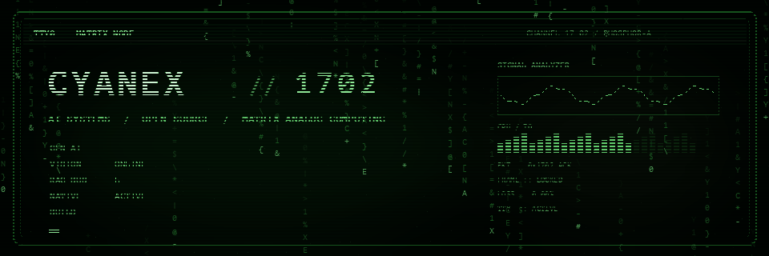
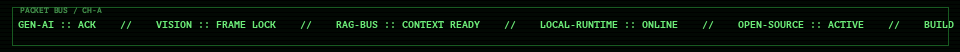
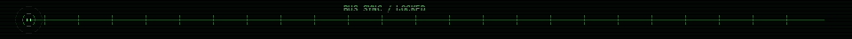
> WHOAMI
USER@GITHUB:~$ WHOAMI
CYANEX1702
USER@GITHUB:~$ UNAME -A
CYANEX1702 17.02 / AI-SYSTEMS / OPEN-SOURCE / MATRIX-ANALOG
USER@GITHUB:~$ CAT /ETC/PROFILE
NODE :: CYANEX1702
CLASS :: AI / SOFTWARE BUILDER
FOCUS :: GENERATIVE_AI | VISION | RAG | LOCAL_AI
MODE :: RESEARCH -> PRODUCT
STATE :: ONLINE
THE MODEL IS ONE COMPONENT. THE SYSTEM IS THE THING THAT MATTERS.
> NEOFETCH
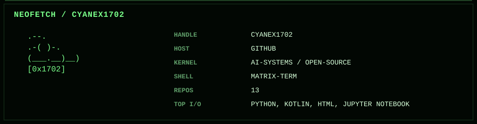
> OPEN /ETC/MOTD
WELCOME TO NODE 17.02
NO CORPORATE-PERSONA PACKAGE DETECTED.
NO "10X NINJA ROCKSTAR" MODULE INSTALLED.
CURRENT PROCESS:
BUILD SYSTEMS THAT LEAVE THE NOTEBOOK,
SURVIVE REAL INPUTS,
AND REMAIN UNDERSTANDABLE WHEN SOMETHING BREAKS.
CTRL+C IS NOT A STRATEGY.
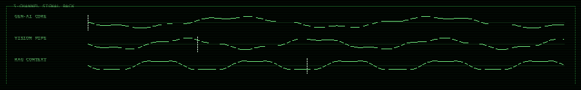
> LS ./PROJECTS --FEATURED
[01] OPENFRAME // LOCAL-FIRST AI CREATIVE STUDIO


TYPE :: DESKTOP CREATIVE SYSTEM
AI :: LOCAL WHISPER TRANSCRIPTION
MEDIA :: MULTITRACK + FFMPEG
STACK :: REACT / TYPESCRIPT / RUST / TAURI
DESIGN :: LOCAL-FIRST / PRIVACY-ORIENTED / NATIVE
STATE :: SHIPPING
> PSTREE OPENFRAME
OPENFRAME
├── UI
│ ├── MULTITRACK_EDITOR
│ ├── DESIGN_CANVAS
│ └── RECOVERY_STATE
├── AI
│ └── WHISPER_LOCAL
├── NATIVE
│ ├── FFMPEG_PIPELINE
│ └── FILESYSTEM_IO
└── RUNTIME
├── TAURI_BRIDGE
└── DESKTOP_SHELL
[02] OMNI // ANDROID MEDIA RUNTIME
TYPE :: ANDROID MEDIA SYSTEM
STACK :: KOTLIN / MEDIA3 / FFMPEG / YT-DLP
MODE :: OFFLINE-FIRST
MODULES :: PLAYBACK / QUEUES / LYRICS / PIP / DOWNLOADS
STATE :: ACTIVE
[03] VIRTUAL_TRY_ON // GENERATIVE FASHION + VISION


GEN :: STABLE DIFFUSION INPAINTING
VISION :: U2NET SEGMENTATION
DOMAIN :: PERSONALIZED FASHION GENERATION
SIGNAL :: COMMUNITY TRACTION
[04] RAG // RETRIEVAL CONTEXT BUS
PIPELINE :: EMBEDDINGS -> VECTOR SEARCH -> CONTEXT -> GENERATION
STACK :: HUGGING FACE / CHROMADB / LLMS
FOCUS :: SEMANTIC RETRIEVAL / GROUNDED GENERATION
[05] IMAGE_SENSEI // DATASET ACQUISITION UTILITY
TYPE :: MULTITHREADED IMAGE SCRAPER
FILTERS :: DUPLICATES / TEXT-HEAVY IMAGES
OUTPUT :: NORMALIZED CV-READY DATASETS
[06] GRIMOIRE // OFFLINE-FIRST ANDROID SYSTEM
STACK :: KOTLIN / JETPACK COMPOSE / SQLITE
FEATURES :: BUDGETS / REPORTS / EXPORTS / VOICE / BIOMETRICS
MODE :: NATIVE + OFFLINE-FIRST
> LSHW --CYANEX
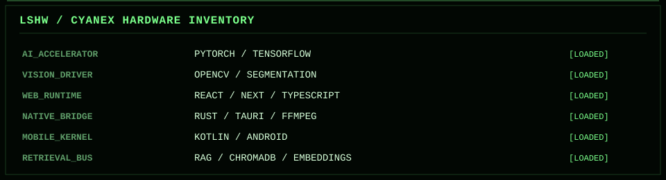
> CAT /PROC/STACK/MENTAL_MODEL
AI / ML
├── GENERATIVE SYSTEMS
├── MULTIMODAL WORKFLOWS
├── COMPUTER VISION
├── RETRIEVAL / RAG
└── LOCAL INFERENCE
SOFTWARE
├── DESKTOP APPLICATIONS
├── ANDROID
├── NATIVE MEDIA PROCESSING
├── OPEN-SOURCE TOOLING
└── DATA PIPELINES
OPERATING RULE
└── BUILD BEYOND THE DEMO
> ./SNAKE.DAEMON --LIVE
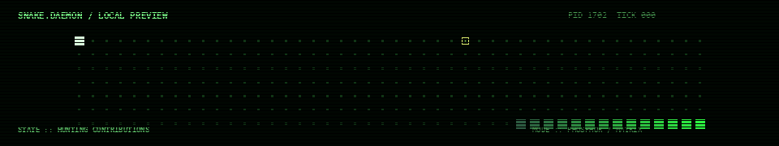
LOCAL SNAKE.DAEMON + LIVE CONTRIBUTION SNAKE // GENERATED BY GITHUB ACTIONS
> ./MATRIX-MEMORY --CONTRIBUTIONS
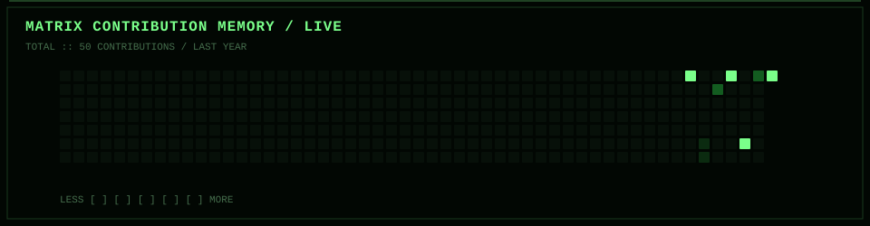
> ./TELEMETRY --LIVE
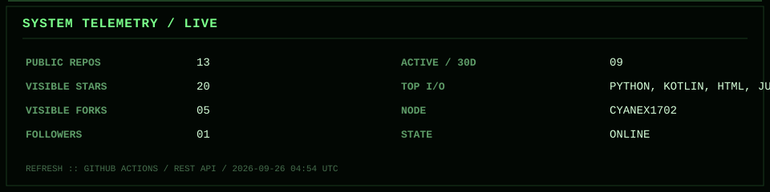
> CAT /VAR/LOG/LAST_PACKET
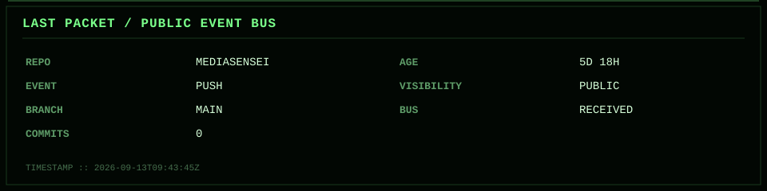
> NETSTAT --TOPOLOGY
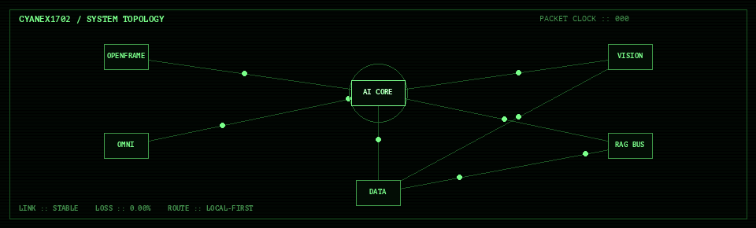
AI CORE
├── OPENFRAME :: LOCAL AI + DESKTOP MEDIA
├── OMNI :: ANDROID + NATIVE MEDIA
├── VISION :: GENERATIVE VISION / TRY-ON
├── RAG BUS :: RETRIEVAL + CONTEXT
└── DATA :: SCRAPING + DATASET ENGINEERING
> MAN CYANEX1702
CYANEX1702(1) // USER COMMANDS
NAME
CYANEX1702 - BUILDS QUESTIONABLE AMOUNTS OF SOFTWARE
THROUGH TERMINAL-SHAPED INTERFACES.
SYNOPSIS
CYANEX1702 [--BUILD] [--BREAK] [--REBUILD] [--SHIP]
DESCRIPTION
OPERATES ACROSS GENERATIVE AI, COMPUTER VISION,
RETRIEVAL, LOCAL AI, DESKTOP SYSTEMS, AND ANDROID.
OPTIONS
--BUILD
TURN AN IDEA INTO A RUNNING SYSTEM.
--BREAK
DISCOVER WHAT THE HAPPY PATH WAS HIDING.
--REBUILD
REMOVE THE PART THAT SHOULD NOT HAVE EXISTED.
--SHIP
RELEASE BEFORE ANOTHER REWRITE BECOMES TEMPTING.
BUGS
PROBABLY.
FILES
/DEV/GENERATIVE_AI
/DEV/VISION_BUS
/VAR/LOG/CYANEX1702
/HOME/CYANEX1702/PROJECTS
SEE ALSO
GIT(1), PYTHON(1), RUST(1), KOTLIN(1), CAFFEINE(8)
> TAIL -F /VAR/LOG/CYANEX1702/CURRENT.LOG
CYANEX1702 = {
"AI": [
"GENERATIVE SYSTEMS",
"MULTIMODAL WORKFLOWS",
"COMPUTER VISION",
"RAG",
"LOCAL AI",
],
"SOFTWARE": [
"DESKTOP SYSTEMS",
"ANDROID",
"NATIVE MEDIA PROCESSING",
"OPEN-SOURCE TOOLING",
],
"RULE": "BUILD BEYOND THE DEMO",
}
while ONLINE:
BUILD()
TEST()
BREAK_THINGS()
IMPROVE()
SHIP()
> SUDO REVEAL-HIDDEN-MESSAGE
PERMISSION GRANTED.
IF YOU OPENED EVERY COLLAPSIBLE PROCESS,
YOU ARE EXACTLY THE KIND OF PERSON
THIS PROFILE WAS BUILT FOR.
SIGNAL-ID :: 0x1702
CARRIER :: STABLE
TERMINAL :: STILL ALIVE
NO CARRIER? NEVER.
CYANEX1702 :: TERMINAL STILL ACTIVE